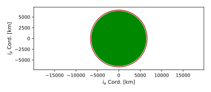
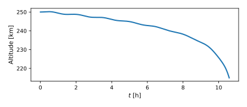
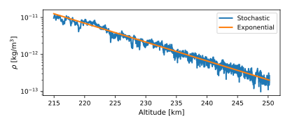
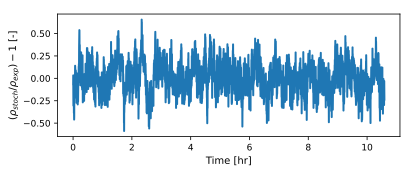
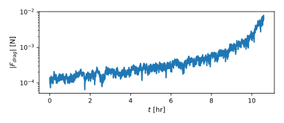

scenarioStochasticDragSpacecraft
This scenario mirrors examples/mujoco/scenarioStochasticDrag.py but uses
the spacecraft.Spacecraft dynamics model (spacecraft.h based) together
with MeanRevertingNoiseStateEffector.
The atmospheric density used by drag is:
where \(\delta_\rho\) is an Ornstein-Uhlenbeck process implemented as a state in the state effector.
Illustration of Simulation Results
The following images illustrate a possible simulation result.
The orbit is plotted in the orbital plane:

The altitude as a function of time is plotted.

The atmospheric density as a function of altitude is plotted in lin-log space. This shows two lines: the deterministic, exponential density (should appear linear); and the stochastic density.

The atmospheric density correction, which should have a standard deviation of 0.15.

The magnitude of drag force over time is plotted in lin-log space.

- scenarioStochasticDragSpacecraft.plotOrbits(timeAxis, posData, velData, dragForce, deterministicDenseData, oe, mu, planetRadius, dragCoeff, dragArea)[source]
Plot orbit, altitude, atmosphere, correction, and drag.
- scenarioStochasticDragSpacecraft.run(showPlots: bool = False, rngSeed: int | None = None, useWind: bool = False)[source]
Run the spacecraft-based stochastic drag scenario.
- Parameters:
showPlots – If True, display figures.
rngSeed – Optional stochastic integrator seed for reproducibility.
useWind (bool) – If True, link a
ZeroWindModelvia SPICE so drag is computed against the atmosphere-relative velocity. If False (default), the inertial spacecraft velocity is used directly.
- Returns:
Dict of matplotlib figure handles.